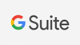

Abrir chamado - GSuite
Se você estiver com dificuldade para acessar o pacote G-Suite por favor clique no link abaixo para ser direcionado para abertura de chamado!
Se você estiver com dificuldade para acessar o pacote G-Suite por favor clique no link abaixo para ser direcionado para abertura de chamado!